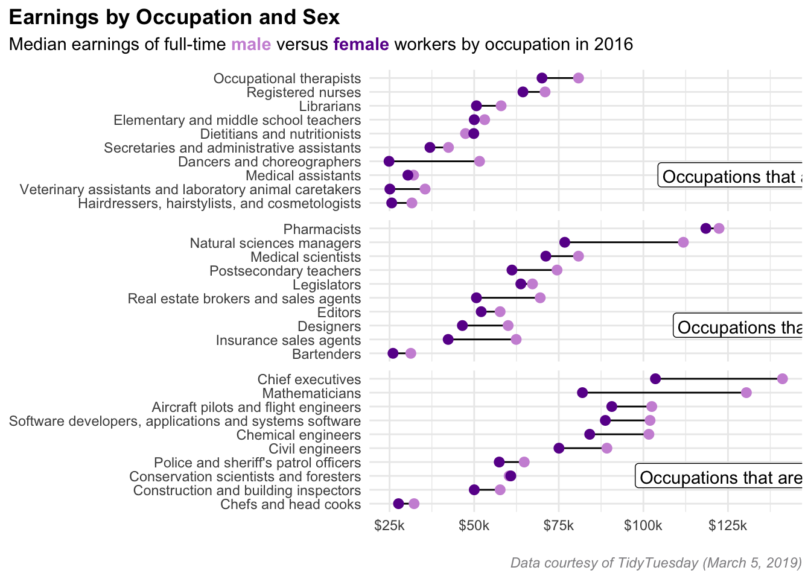
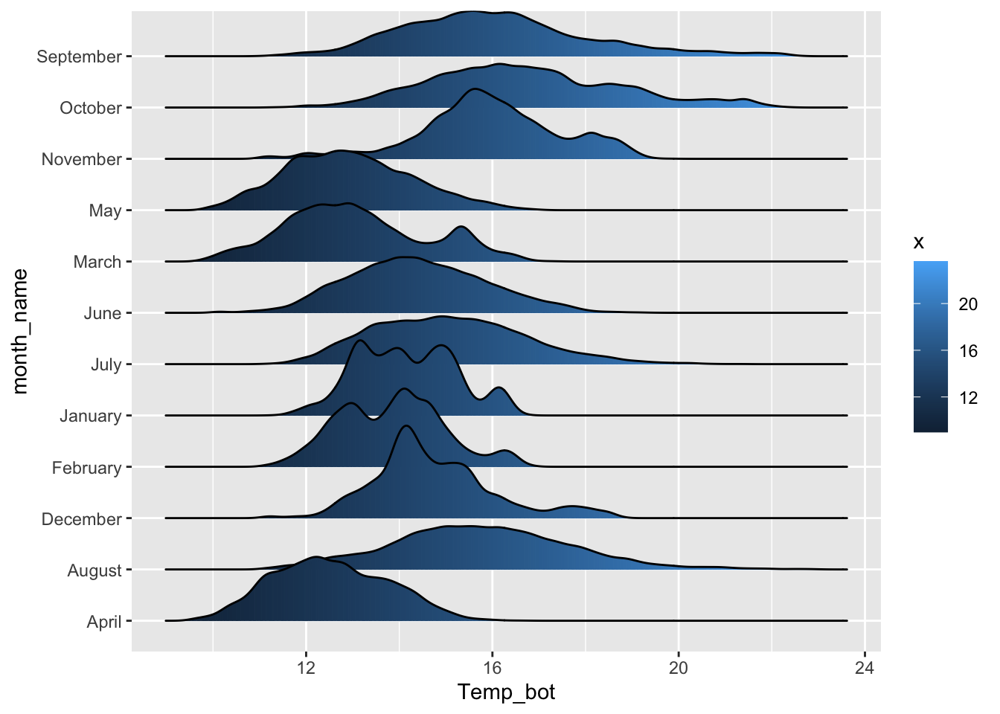
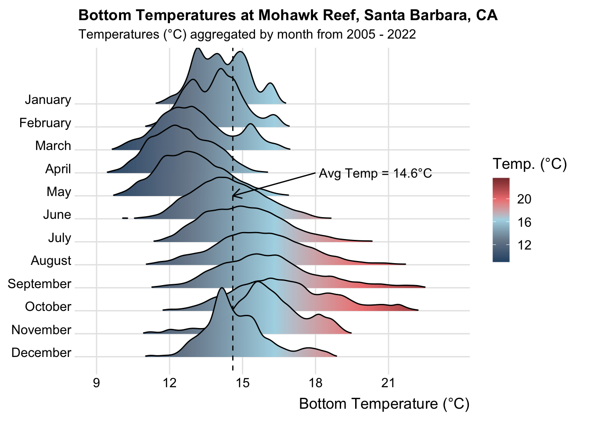

One workflow for building effective (and pretty) {ggplot2} data visualizations

{ggplot2} has, in many ways, become the de facto tool for data visualization in R. And with the many extension packages available, there’s hardly a limit to what you can create. Building effective and visually-pleasing data visualizations is a skill that gets easier with practice, and following a somewhat structured workflow – at least at the start – can help you get there faster. This workshop covers one approach for doing so, though you’ll find what works best for you with time.
Below, you’ll find three different examples, beginning with an assessment of the raw data and ending with a completed visualization. Here’s a sneak peak of what we’ll be creating:

Step 1. What data type(s)?
In order to determine the most appropriate and effective chart type, you first need to determine what type(s) of data you’re working with.
Let’s say we’re interested in visualizing temporal variation in bottom temperature at Mohawk Reef (Santa Barbara, CA), a near-shore rocky reef and one of the Santa Barbara Coastal (SBC) LTER research sites. To do so, we’ll use SBC LTER data, SBC LTER: Ocean: Currents and Biogeochemistry: Moored CTD and ADCP data from Mohawk Outside Spar (MKO), ongoing since 2005, available for download on the EDI Data Portal.
Warning: Large data file!
Do not attempt to push raw data to GitHub – adding your raw-data/ folder (or equivalent) to your .gitignore is highly recommmended. You may download the cleaned mohawk_cleaned.rds file here.
The raw data file contains 87 variables and >473,000 observations across 18 years (2005 - 2022) (data have been interpolated to a 20 min interval) – cleaning involves selecting only variables of interest, coercing variables to the appropriate data type, adding month abbreviations, and assessing missing data (find the cleaning script here).
Below are 10 randomly sampled rows from our cleaned data:
#..........................load packages.........................
library(tidyverse)
#......................read in cleaned data......................
mko_clean <- readRDS(here::here("clean-data", "mohawk_temps.rds"))
#....................randomly sample 10 rows.....................
set.seed(12345)
(random_mko_sample <- dplyr::sample_n(mko_clean, 10))# A tibble: 10 × 8
date_time year month day month_name Temp_bot Temp_mid Temp_top
<dttm> <fct> <fct> <dbl> <fct> <dbl> <dbl> <dbl>
1 2019-08-24 06:00:00 2019 08 24 August 15.4 17.4 19.1
2 2012-11-22 02:19:58 2012 11 22 November 15.9 16.1 16.0
3 2008-10-05 17:19:58 2008 10 5 October 13.8 15.8 16.2
4 2012-06-14 07:39:56 2012 06 14 June 16.1 16.4 16.9
5 2022-10-29 05:39:59 2022 10 29 October NA NA NA
6 2017-06-19 03:20:01 2017 06 19 June 15.0 16.4 18.1
7 2018-08-13 01:59:57 2018 08 13 August 23.1 23.5 23.4
8 2018-06-19 10:59:57 2018 06 19 June 14.8 15.3 15.6
9 2007-05-17 04:59:57 2007 05 17 May 11.9 12.6 12.8
10 2019-03-24 01:39:56 2019 03 24 March 14.3 14.5 14.6We are working with both numeric data (bottom temperature, Temp_bot) and categorical data (months, month). Further we have several (well, many) observations per group (month).
Step 2. What visualization type?

Next, decide what visualization type(s) is most appropriate given your data type(s).
From Data to Viz (in my opinion) the best place to start when answering this question – use the decision tree to explore chart options based on your data type(s).
Click on a particular chart type in the From Data to Viz decision tree to find:
- a definition and examples(s)
- a description of what that chart type is used for
- common variations on that chart type
- common mistakes (and how to avoid them)
- related chart types (i.e. others that you might also consider using for your given data type(s))
- links to the R graph gallery and Python gallery with many different examples of that chart type + code so that you can learn how to create your own
This is seriously such an invaluable resource, and I highly recommend turning to it often!!!
We’re presented with a few great options (boxplot, violin plot, ridgeline plot, density plot, histogram) given our data. I’m partial to the ridgeline plot – I find it an intuitive way to view changes in temperature distributions through time, so that’s what I’ll choose for this example:

Step 3. Create a basic plot
Let’s start by creating a super basic ridgeline plot of aggregate bottom temperatures by month using the {ggridges} package:
#..........................load packages.........................
library(tidyverse)
library(ggridges)
#..........................read in data..........................
mko_clean <- readRDS(here::here("clean-data", "mohawk_temps.rds"))
#..............................plot..............................
mko_ridges_plot <- mko_clean |>
group_by(month_name) |>
# create ridgeline plot ----
ggplot(aes(x = Temp_bot, y = month_name, fill = after_stat(x))) +
ggridges::geom_density_ridges_gradient()
mko_ridges_plot
Step 4. Improve clarity & take-home message(s)
We’ve successfully plotted our temperature data, but we’ll want to update the following so that our visualization is easier to interpret:
- order months chronologically
- apply an intuitive color gradient scale
We might also choose to:
- highlight a particular benchmark temperature(s) (e.g. the average bottom temperature across our data set) – adding a vertical line and annotations is a great option for this
- explore
geom_density_ridges_gradient()argument options to modify the appearance of our ridges
#..........................load packages.........................
library(tidyverse)
library(ggridges)
#..........................read in data..........................
mko_clean <- readRDS(here::here("clean-data", "mohawk_temps.rds"))
#.......................calculate avg temp.......................
mko_avg <- mko_clean |>
summarize(mean_temp = round(mean(Temp_bot, na.rm = TRUE), 1)) |>
pull()
#..............................plot..............................
mko_ridges_plot <- mko_clean |>
group_by(month_name) |>
# create ridgeline plot ----
ggplot(aes(x = Temp_bot, y = month_name, fill = after_stat(x))) +
ggridges::geom_density_ridges_gradient(rel_min_height = 0.01, scale = 3) + # rel_min_height cuts trailing tails (0.01 suggested); scale sets extent of overlap
# add vertical line at avg temp + annotation
geom_vline(xintercept = mko_avg, linetype = "dashed", color = "black") +
annotate(geom = "segment", x = 18, y = "April", xend = mko_avg, yend = "May",
arrow = arrow(length = unit(3, "mm"))) + # this is mostly just a bunch of manual fiddling until the arrow is placed where I want it
annotate(geom = "text", x = 18, y = "April", label = paste0(" Avg Temp = ", mko_avg, "°C"), hjust = "left") + # same here
# set x-axis breaks ----
scale_x_continuous(breaks = c(9, 12, 15, 18, 21)) +
# arrange months in reverse chronological order ----
scale_y_discrete(limits = rev(month.name)) +
# fill color ----
scale_fill_gradientn(colors = c("#2C5374","#778798", "#ADD8E6", "#EF8080", "#8B3A3A"), name = "Temp. (°C)")
mko_ridges_plotStep 5. Final touches / polishing
Finally, we can update labels/titles, apply a pre-built theme and/or update theme() options to our liking to polish up our visualization. The {ggridges} package includes a pre-built theme that’s meant to work nicely with ridgeline plots, so we’ll use that here:
#..........................load packages.........................
library(tidyverse)
library(ggridges)
#..........................read in data..........................
mko_clean <- readRDS(here::here("clean-data", "mohawk_temps.rds"))
#.......................calculate avg temp.......................
mko_avg <- mko_clean |>
summarize(mean_temp = round(mean(Temp_bot, na.rm = TRUE), 1)) |>
pull()
#..............................plot..............................
mko_ridges_plot <- mko_clean |>
group_by(month_name) |>
# create ridgeline plot ----
ggplot(aes(x = Temp_bot, y = month_name, fill = after_stat(x))) +
ggridges::geom_density_ridges_gradient(rel_min_height = 0.01, scale = 3) + # rel_min_height cuts trailing tails (0.01 suggested); scale sets extent of overlap
# add vertical line at avg temp + annotation
geom_vline(xintercept = mko_avg, linetype = "dashed", color = "black") +
annotate(geom = "segment", x = 18, y = "April", xend = mko_avg, yend = "May",
arrow = arrow(length = unit(3, "mm"))) + # this is mostly just a bunch of manual fiddling until the arrow is placed where I want it
annotate(geom = "text", x = 18, y = "April", label = paste0(" Avg Temp = ", mko_avg, "°C"), hjust = "left") + # same here
# set x-axis breaks ----
scale_x_continuous(breaks = c(9, 12, 15, 18, 21)) +
# arrange months in reverse chronological order ----
scale_y_discrete(limits = rev(month.name)) +
# fill color ----
scale_fill_gradientn(colors = c("#2C5374","#778798", "#ADD8E6", "#EF8080", "#8B3A3A"), name = "Temp. (°C)") +
# update labs & titles ----
labs(x = "Bottom Temperature (°C)",
title = "Bottom Temperatures at Mohawk Reef, Santa Barbara, CA",
subtitle = "Temperatures (°C) aggregated by month from 2005 - 2022") +
# apply theme ----
ggridges::theme_ridges(font_size = 13, grid = TRUE) +
# adjust theme options ----
theme(
axis.title.y = element_blank()
)
mko_ridges_plot